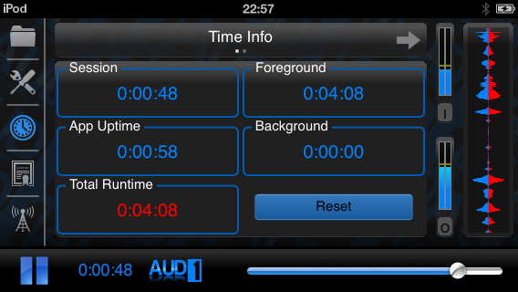

Log Data
Timer information

The timer information page (shown above) is the first page that the user will see when selecting the clock icon from the navigation bar. The clock icon in the navigation bar is illuminated when this page is visible, and the user can return to this page at any time by tapping the clock icon.
The page shows five different timers:
- The session time shows how long the app has been in play mode. When the user stops playback, this timer will reset. This is the same timer information that can be seen from any page of the app adjacent to the app logo.
- The app uptime shows how long the app has been open since it was last forcefully quit. The timer only increments when the app is in the foreground, or when the app is running in play mode in the background.
- The total runtime shows how long the user has used the app in play mode. This value is persistent, and it thus saved when the app is forcefully quit, including when the iOS device runs out of power and initiates shutdown.
- The foreground and background timers shows the proportion of the total runtime is spent in foreground versus background mode. Foreground refers to the time spent in play mode while the AUD-1 app is visible on the device screen. Background mode includes any time spent in play mode where the device screen is switched off, or when the user is using another app simultaneously with AUD-1. As with the total runtime, these timers are persistent.
Tapping the reset button will clear all time information, including the persistent timer data. The user will be prompted to confirm this operation.
Log information
 |
The log page (shown left) can be found to the right of the timer page. |
The logger shows time-stamped information about any user actions made within the app. Some users may find the logs useful in a situation where they adjust a parameter, but then wish to return to a previous setting. The logger will show previous values of the various controls, allowing the user to retrace their steps back to a previous setup. NOTE: No usage statistics are extracted from the app without the user explicitly sending this information.
The contents of the log can be copied to the device clipboard using the copy button so that they can be sent, recorded, or processed using a 3rd party app. The contents of the log can be erased using the clear button. The user will be prompted to confirm this operation in the event of the button being tapped accidentally. The log data is not persistent, and has a limited number of entry slots. This is so it will not bloat the size of the app in memory after extended use.